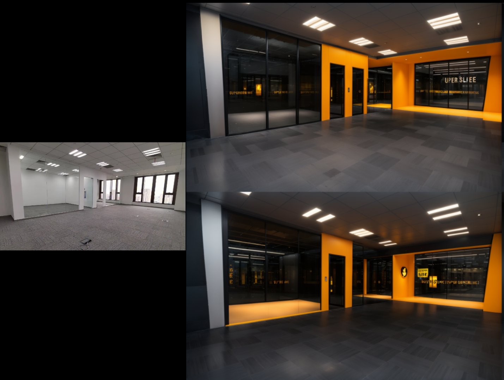
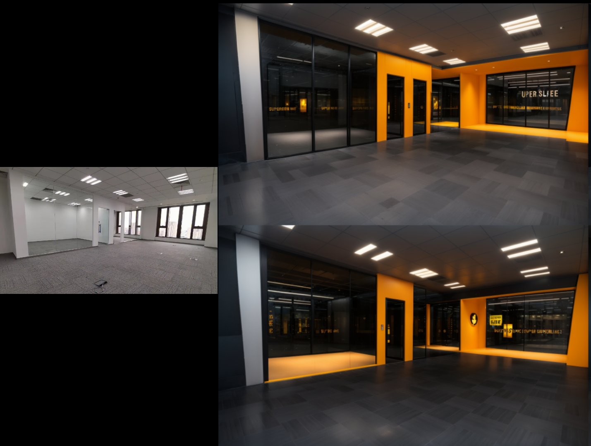

1. 引言
讲座目标
- 了解AI工具如何赋能继续教育业务流程
- 探索AI技术在教育领域的具体应用场景
- 掌握在教育工作中有效利用AI工具的策略
主要议题
- AI技术概览
- 内容生成应用
- 项目设计和报告撰写
- 教育培训和技能提升
- 办公自动化和数据处理
让我们一起探索AI如何重塑继续教育的未来，提升学习体验，并为教育工作者赋能。
2. AI 技术概览（10 分钟）
章节简介
为了更好地理解 AI 工具的应用，本章节将介绍人工智能的基础概念和发展趋势，帮助大家建立全面的认知。我们将探讨AI的核心组成部分、当前的技术发展方向，以及AI在教育和项目管理中的具体应用。
人工智能基础概念
AI、机器学习和深度学习的关系及其在现代技术中的应用
当前 AI 技术的发展趋势
AI技术的主要发展方向和未来应用前景
教育和项目管理中的 AI
AI在教育和项目管理中的创新应用示例
3. AI 工具在内容生成中的应用
章节简介
本章节深入探讨 AI 生成内容（AIGC）工具在宣发材料和多媒体内容创作中的革命性应用。我们将介绍最前沿的 AI 工具，分析其在提高创作效率、个性化内容生成以及跨媒体内容制作中的优势。通过实际案例和经验分享，帮助学员掌握 AIGC 技术在实际工作中的应用策略。
AI 生成内容（AIGC）概述
AI 生成内容技术的工作原理和应用领域
主流 AI 内容生成工具和应用
实际案例分析
AI 辅助内容生成在实际项目中的应用效果
 

AIGC 应用经验与最佳实践
AIGC 工具应用的关键步骤和注意事项
4. AI 工具在项目设计和报告撰写中的应用（15 分钟）
章节简介
本章节深入探讨 AI 技术在项目设计、数据分析和报告撰写中的革新性应用。我们将介绍先进的 AI 工具如何提升方案设计的创新性、加速数据分析过程，以及如何显著提高文档生成的效率和质量。通过实际案例和最佳实践分享，帮助学员掌握 AI 辅助工具在项目管理全周期中的有效运用策略。
AI 在项目设计和报告撰写中的应用概述
AI 技术在项目生命周期各阶段的应用与影响
主流 AI 工具和应用
AI重构的历史项目设计
实际案例分析
AI 在项目设计和报告撰写中的实际应用效果
AI 应用经验与最佳实践
AI 工具在项目设计和报告撰写中的应用策略
5. AI 工具在教育培训和技能提升中的应用（15 分钟）
章节简介
本章节深入探讨 AI 技术如何革新教育培训领域，提升学员和员工的技能水平。我们将介绍 AI 在个性化学习、智能辅导、技能评估等方面的创新应用，并通过实际案例展示 AI 如何改变传统的教育培训模式。同时，我们将分享有效整合 AI 工具到教育体系的策略，以及对 AI 驱动的未来教育趋势的展望。
AI 在教育培训中的应用概述
AI 技术在教育培训各环节的应用与影响
主要 AI 工具和应用
实际案例分析
清华大学《创意设计》课程-AI辅助设计教学
AI 教育应用经验与未来趋势
AI 在教育领域的应用策略和未来发展方向
6. AI 工具在办公自动化和数据处理中的应用
章节简介
本章节深入探讨 AI 技术如何革新日常办公流程和数据处理方式，显著提升工作效率和准确性。我们将介绍先进的 AI 驱动办公工具，展示它们如何简化复杂任务、自动化重复性工作，并提供深入的数据洞察。通过实际案例和最佳实践分享，帮助学员掌握在现代工作环境中有效利用 AI 工具的策略。
AI 在办公自动化和数据处理中的应用概述
AI 技术在办公环境中的多样化应用场景
实际案例分析

AI 辅助办公实现异构数据转化
AI 办公应用经验与最佳实践
AI 工具在办公环境中的有效应用策略
7. AI 工具在业务拓展与合作中的应用
章节简介
本章节深入探讨 AI 技术如何革新企业的业务拓展策略，增强市场竞争力，并促进与行业领先企业的创新合作。我们将介绍 AI 在市场分析、客户洞察、产品创新等方面的先进应用，展示 AI 如何帮助企业识别新机遇、优化决策流程，并建立战略合作关系。通过实际案例和最佳实践分享，帮助学员掌握利用 AI 工具实现业务增长和合作共赢的有效策略。
AI 在业务拓展与合作中的应用概述
AI 技术在业务拓展与合作中的多维度应用
实际案例分析
AI 在业务拓展与合作中的实际应用效果
AI 业务拓展经验与最佳实践
AI 工具在业务拓展与合作中的有效应用策略
8. AI 工具应用的最佳实践和推荐（20 分钟）
章节简介
本章节作为课程的总结，将全面梳理 AI 工具的应用方法，分享来自各行业的最佳实践，并提供实用的工具选择和实施建议。我们将探讨如何有效地将 AI 技术融入不同的业务场景，克服实施过程中的常见挑战，并持续优化 AI 解决方案。通过系统化的方法论和丰富的案例分析，帮助学员构建一个全面的 AI 工具应用框架，为企业数字化转型提供有力支持。
AI 工具应用的关键成功因素
AI 工具成功应用的核心要素和影响因素
AI 工具应用的最佳实践
AI 工具应用的系统化方法和最佳实践
推荐工具和资源
各类 AI 工具和学习资源的综合对比
未来展望与持续优化
AI 技术发展趋势和持续优化策略
9. 未来展望：AI 在教育和业务中的趋势
章节简介
本章节将深入探讨 AI 技术的未来发展方向，分析其在教育和商业领域的潜在影响和机遇。我们将聚焦于 AI 驱动的创新教育模式、新兴的商业应用场景，以及 AI 与其他前沿技术的融合趋势。通过前瞻性的分析和案例预测，帮助学员洞察未来的技术生态，为长远的战略规划和个人发展提供指导。同时，我们将提供切实可行的行动建议，帮助学员在 AI 快速发展的时代中保持竞争优势。
AI 在教育领域的未来趋势
AI 驱动的未来教育生态系统
AI 在商业领域的未来应用
AI 驱动的未来商业生态系统
AI 与新兴技术的融合趋势
AI 与其他前沿技术的协同发展
行动建议
面向 AI 未来的战略行动指南
10. 问答环节
- 解答听众疑问
- 针对 AI 工具的使用方法、实施策略等问题进行解答。
- 讨论实际应用中的挑战
- 技术挑战：数据质量、技术门槛等问题的解决方案。
- 组织挑战：变革管理和员工接受度的提升策略。